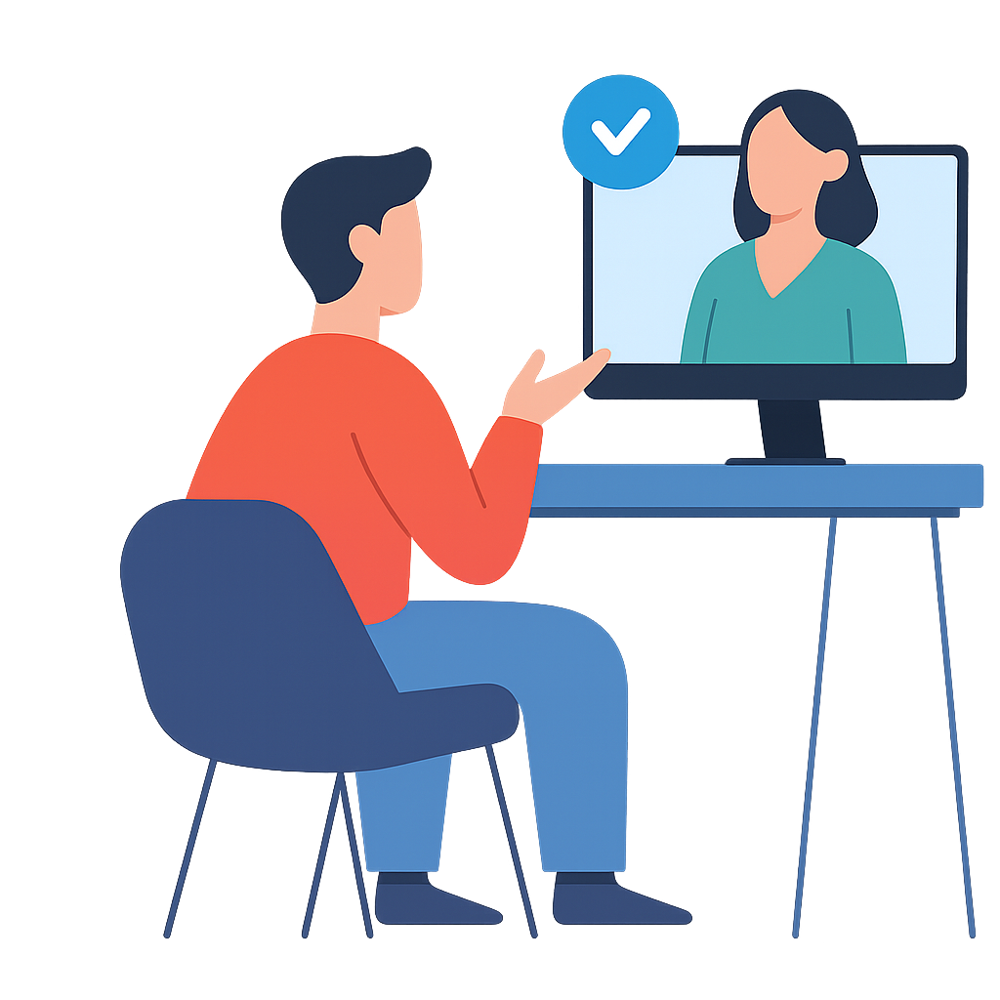

INTERVMATE에 오신 것을 환영합니다
AI와 함께 다음 면접을 확실하게 준비하세요
IntervMate는 단순한 모의면접 도우미가 아닙니다.
AI가 실시간으로 시선, 표정, 말투를 분석하고,
당신의 답변에 맞춰 피드백을 제공합니다.
자신 있게 말하는 연습부터 면접관의 시선에 익숙해지는 훈련까지,
IntervMate가 당신의 면접을 완성으로 이끌어줍니다.
